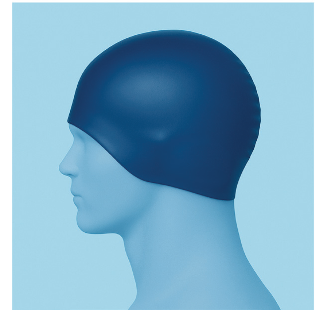
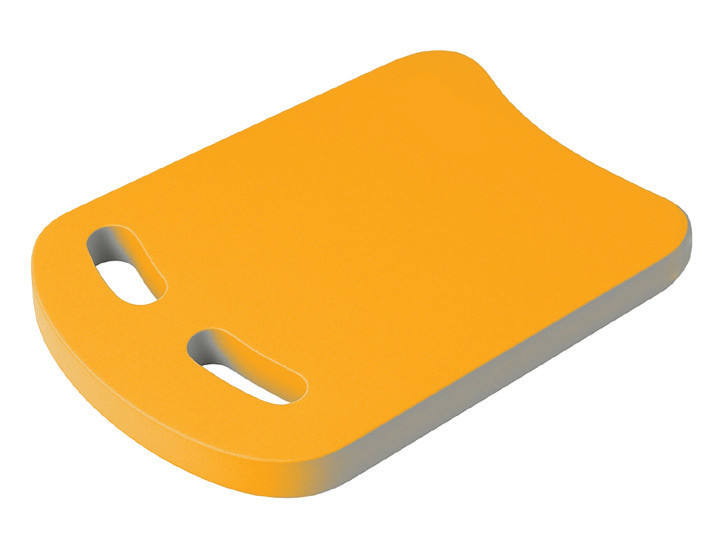

Kickboard
The kickboard is a buoyant tool used during training to support the swimmer’s upper body, allowing them to focus on improving their leg movements, Figure 3.6. Kickboards are commonly used for practicing kicking techniques. They allow swimmers to isolate their leg movements and strengthen their lower body without worrying about balance in the water.

Pull buoy
A pull buoy is a buoyant device placed between the swimmer’s legs, typically at the thighs or ankles, to help maintain buoyancy and stability while focusing on arm movements, Figure 3.7. It isolates the upper body, allowing swimmers to concentrate on improving their stroke technique, strength, and endurance without the added effort of kicking.
SPORTS STUDIES FORM TWO.indd 78
9/17/25 9:54 AM